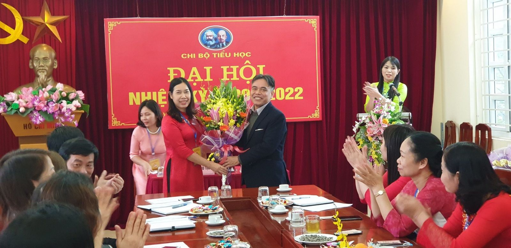
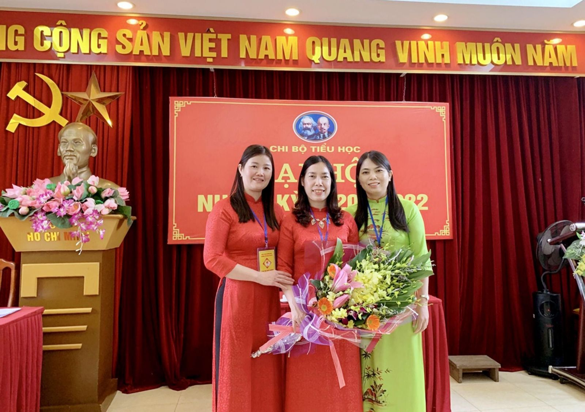

Đại hội Chi bộ Trường Tiểu học Yên Sở nhiệm kỳ 2020 - 2022
Sáng ngày 13/02/2020, Chi bộ Trường Tiểu học Yên Sở đã tổ chức Đại hội Chi bộ nhiệm kỳ 2020 - 2022 tại Phòng Hội đồng Sư phạm nhà trường.
Chi bộ vui mừng được đón tiếp đồng chí Lê Văn Thuận - Bí thư Đảng ủy phường Yên Sở, đồng chí Lương Văn Sơn - Thường vụ Đảng Ủy, đồng chí Nguyễn Minh Thư - Thường vụ Đảng Ủy cùng các đồng chí Đảng viên của Chi bộ về dự Đại hội.

Đ/c Lê Văn Thuận có bó hoa tươi thắm tặng Đại hội
Đại hội diễn ra theo đúng trình tự, nội dung chương trình. Mở đầu là nghi lễ chào cờ, hát Quốc ca, Quốc tế ca.
Tiếp đến là bầu đoàn Chủ tịch điều hành Đại hội và Thư ký đại hội. Đại hội đã thống nhất 100% số lượng Đoàn Chủ tịch gồm 03 đồng chí, Thư ký đại hội gồm 01 đồng chí như sau:
* Đoàn Chủ tịch
1. Đồng chí Nguyễn Thị Hồng - Bí thư Chi bộ..
2. Đồng chí Cao Thị Bích Hạnh - Phó Bí thư Chi bộ.
3. Đồng chí Trương Thị Phương Lan - Chi ủy viên
* Tổ Thư ký
1. Đồng chí Nguyễn Thị Mai - Thư ký Chi bộ - Giáo viên.
Tại Đại hội, dưới sự điều hành của Đoàn chủ tịch, các đồng chí Đảng viên trong Chi bộ đã phát huy tinh thần trách nhiệm cao trong các nội dung làm việc của Đại hội. Chi bộ đã thông qua báo cáo kiểm điểm, đánh giá kết quả thực hiện Nghị quyết Đại hội nhiệm kỳ 2017 - 2020, đề ra phương hướng, mục tiêu, nhiệm vụ nhiệm kỳ 2020 - 2022 của Chi bộ, Báo cáo kiểm điểm của Ban chi uỷ nhiệm kỳ 2017-2020, Báo cáo tổng hợp tham gia ý kiến văn kiện của cấp trên.
Đại hội thảo luận, các ý kiến thảo luận của các đồng chí:
Đồng chí Nguyễn Thị Nga – ý kiến thảo luận với nội dung: Đảng viên trẻ trong phong trào “Mỗi thầy cô giáo là một tấm gương tự học và sáng tạo”.
Đồng chí Khúc Thị Mai Hương – ý kiến thảo luận về “Tính tiên phong của Đảng viên trong việc thực hiện tốt các phong trào thi đua và các cuộc vận động, đặc biệt là cuộc vận động “Đẩy mạnh học tập và làm theo tư tưởng đạo đức, phong cách Hồ Chí Minh”.
Tiếp theo là phần bầu cử Cấp ủy, Bí thư, phó Bí thư Chi bộ nhiệm kỳ 2020 - 2022. Trong không khí nghiêm túc, tinh thần dân chủ, Đại hội đã lựa chọn những Đảng viên tiêu biểu nhất, có phẩm chất chính trị vững vàng, có trình độ chuyên môn cao để bầu vào Ban chấp hành Chi bộ nhiệm kỳ 2020 - 2022. Đại hội nhất trí 100% kết quả biên bản kiểm phiếu bầu Cấp ủy nhiệm kỳ mới và biên bản kiểm phiếu bầu Bí thư, Phó bí thư Chi bộ trường Tiểu học Yên Sở gồm 3 đồng chí:
1. Đồng chí Nguyễn Thị Hồng –Bí thư Chi bộ.
2. Đồng chí Trương Thị Phương Lan – Phó bí thư Chi bộ.
3. Đồng chí Trần Thị Tuyết Hường – Chi ủy viên

Các đồng chí trong Cấp ủy chi bộ nhiệm kì 2020 - 2022
Nghị quyết Đại hội đã được thông qua vào lúc 10h30 ngày 13/02/2020 thể hiện sự quyết tâm của Đảng viên toàn Chi bộ sẽ hoàn thành tốt các nhiệm vụ chính trị mà Đảng ủy cấp trên giao phó trong nhiệm kỳ 2020 – 2022.
Kết thúc Đại hội là nghi lễ chào cờ bế mạc. Đại hội Chi bộ Trường Tiểu học Yên Sở nhiệm kỳ 2020 – 2022 đã thành công tốt đẹp.